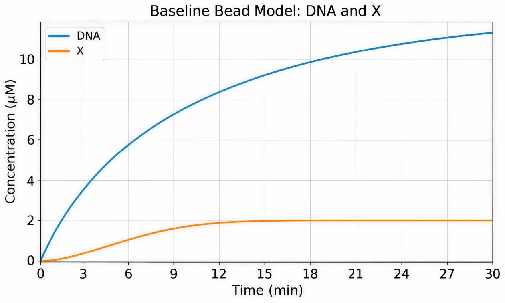

Introduction
Designing an RPA–CRISPR/Cas12a assay requires both selecting an RPA primer–crRNA combination and coordinating multiple reaction components. The dry-lab workflow was therefore divided into two modules: a machine-learning model that ranks primer–crRNA candidate combinations, and a reaction-kinetics model that simulates the assay and searches for reaction conditions[1].
This workflow addresses the following four problems:
RPA primers and crRNAs are usually designed separately, and the results selected independently do not necessarily form the combination with the highest detection efficiency. We combine one RPA primer pair and one crRNA spacer sequence into one candidate combination, then use a machine-learning model to rank candidate combinations generated within the same target gene.
Most existing guide RNA (gRNA) design models use continuous nucleotide sequences as input[2,3,4]. Convolutional neural networks (CNNs) and recurrent neural networks (RNNs) commonly process either a single gRNA or a sequence pair consisting of a gRNA and its target sequence. DNA language models such as DNABERT, Evo 2, and GENERator also use continuous sequences as their basic input. In our candidate combinations, the forward primer, reverse primer, and crRNA spacer sequence are located at different positions in the target gene. If the entire target-gene sequence is provided directly, the model cannot identify the three design sequences in the combination; concatenating the three sequences instead would alter their original positional relationships. To allow the model to identify all three design sequences while preserving their positional relationships, we input the amplicon sequence and the three design sequences separately into the same DNABERT-6 model[5], then combine the numerical representations of the four sequence inputs with numerical features that describe sequence properties and relative positions to evaluate the complete candidate combination.
Publications usually report only better-performing primer-crRNA combinations. They provide positive samples but rarely report ineffective or poorer-performing combinations, resulting in too few negative samples. We refer to the candidate combinations used in the literature as literature-reported combinations. To train a model under these data conditions, we first check whether each literature-reported combination can be matched to the corresponding target-gene sequence, then generate other candidate combinations within a similar design range on the same target-gene sequence. Each literature-reported combination and its corresponding other candidate combinations form one candidate group. The machine-learning model learns to rank the literature-reported combination ahead of the other candidate combinations in the same group.
In the RPA-CRISPR/Cas12a reaction, the concentrations of multiple enzymes and reactants jointly affect the detection signal, and adjusting individual components one at a time makes it difficult to compare numerous concentration combinations. We built a reaction kinetics model to describe the detection process and then used a differential evolution algorithm to search for reaction conditions within specified ranges.
To address these limitations, we established the following two modules:
Machine-learning screening of candidate combinations. We obtained 142 literature-reported combinations, and candidate generation was completed for 112 of them. The resulting 112 candidate groups contained 13,552 candidate combinations. A DNABERT-6-based machine-learning model combined four sequence representations with 19 numerical features to score each candidate combination. In 26 test candidate groups, the model ranked 24 literature-reported combinations first in their respective candidate groups. In RSV screening, the candidate combination ranked second by the model also showed the highest detection efficiency in wet-lab experiments.
Reaction-condition search using the reaction kinetics model: we use a set of reaction-diffusion partial differential equations to describe reverse transcription, RPA amplification, Cas12a activation, and reporter-molecule cleavage, and simulate changes in the concentrations of major reactants over 30 min. The model represents the detection signal by the concentration of cleaved reporter molecules.
To search for reaction conditions, we treated the concentrations of one RPA primer pair, polymerase, recombinase, the Cas12a-crRNA complex, and reverse transcriptase as search variables. The differential evolution algorithm compares different concentration combinations within specified ranges and outputs the reaction conditions predicted by the model.
Method
The machine-learning model addresses the joint evaluation of candidate combinations, model input for discontinuous sequences, and model training when negative samples are insufficient. The reaction kinetics model describes the detection process and is used to compare detection signals when the concentrations of multiple components vary together.
The training data for the machine-learning model came from published studies. We first checked whether each literature-reported combination could be matched to the corresponding target-gene sequence, then generated other candidate combinations within a similar design range. Each literature-reported combination and its corresponding other candidate combinations formed one candidate group. The literature-reported combinations had been used in actual detection assays, whereas the other candidate combinations in the same groups had no experimental results. During training, the model learned to rank each literature-reported combination ahead of the other candidate combinations in its group.
After training the model, we followed the same candidate-generation process to generate and score candidate combinations in the RSV target-gene sequence. The top 10 candidate combinations entered wet-lab experiments, and their detection efficiencies were compared using the experimental results.
The reaction kinetics model uses a set of reaction-diffusion partial differential equations to describe reverse transcription, RPA amplification, Cas12a activation, and reporter-molecule cleavage, and calculates changes in the concentrations of major reactants over 30 min. The concentration of cleaved reporter molecules represents the detection signal. The differential evolution algorithm compares combinations of component concentrations within specified ranges to obtain the reaction conditions predicted by the model.

Screening primer-crRNA combinations
Dataset curation
To construct the dataset for the machine-learning model, we searched PubMed and Google Scholar for studies on RPA-CRISPR/Cas12a detection published by July 30, 2026, using combinations of search terms including “RPA,” “recombinase polymerase amplification,” “CRISPR,” “Cas12a,” and “crRNA.” We organized the pathogen, target gene, one RPA primer pair, and one crRNA spacer sequence from the same detection assay into one design record, ultimately compiling 200 data records from 103 publications to construct the machine-learning model.
We retrieved the corresponding target-gene sequences from NCBI GenBank using the sequence accession numbers provided in the publications. To verify the reported RPA primers and crRNA spacer sequences, we used the locate_oligo() function in a custom Python script to compare each segment of the target-gene sequence that had the same length as the sequence being matched. The forward primer was matched in its original orientation, whereas the reverse primer was reverse-complemented before matching. Each primer was allowed up to 3 mismatches, but the final 2 nucleotides at the 3′ end had to match exactly; the crRNA spacer sequence was allowed up to 1 mismatch.
After sequence matching, we checked the orientations of the two primers, the amplicon length, the position corresponding to the crRNA spacer sequence, and the adjacent TTTV PAM, where V denotes A, C, or G. The amplicon length was restricted to 50–1500 nt, and the position corresponding to the crRNA spacer sequence had to lie between the two primers.
Among the 200 design records, all three sequences in 119 records matched the target-gene sequence exactly, while those in another 23 records matched within the specified mismatch limits, yielding 142 literature-reported combinations. These 142 literature-reported combinations proceeded to the subsequent candidate-generation step.
Candidate generation
To place the literature-reported combinations and generated candidate combinations within similar design ranges, we used a custom Python script to summarize the features of the RPA primers, crRNA spacer sequences, and amplicons in the literature-reported combinations, then used these results to define the overall range for candidate generation. We subsequently generated other candidate combinations in the target-gene sequences corresponding to the 142 literature-reported combinations.
To generate RPA primer pairs, we used Primer3 to design primers within the target-gene sequences. For each candidate group, we set the search ranges based on the lengths, GC contents, and melting temperatures of the two primers in the corresponding literature-reported combination. Amplicon length was uniformly restricted to 88–500 nt; other basic parameters are listed in the code block below.
To generate crRNA spacer sequences, we scanned both strands of each target-gene sequence for TTTV PAMs and enumerated the adjacent 18–26 nt sequences. We then used the amplification region defined by each RPA primer pair to retain sites where both the PAM and the position corresponding to the crRNA spacer sequence lay within that region. One RPA primer pair and one crRNA spacer sequence that satisfied the positional requirement formed one candidate combination.
Of the 142 literature-reported combinations, 28 failed to yield primer pairs that met the specified conditions in Primer3; one had a primer longer than the 36 nt input limit supported by Primer3-py 0.6.1; and one had a target-gene sequence containing non-ACGT characters that Primer3 could not process. The remaining 112 literature-reported combinations formed 112 candidate groups. After removing duplicate records and organizing the generated candidate combinations, we obtained 13,552 candidate combinations: 112 literature-reported combinations and 13,440 generated candidate combinations.
Candidate-generation constraints
Primer length: 20–36 nt
Primer GC content: 19%–68%
Amplicon length: 88–500 nt
crRNA spacer length: 18–26 nt
PAM: TTTV
Maximum homopolymer length: 6 ntDataset preprocessing
Each candidate combination contains a forward primer, a reverse primer, and a crRNA spacer sequence, but the three design sequences are discontinuous on the target-gene sequence. Providing only the complete target-gene sequence does not clearly identify the three sequences in the current candidate combination. Concatenating the three sequences directly would place bases from different positions together in the input and remove the original spacing information among the sequences. To provide the model with the functional identities of the three design sequences, the nucleotide context of their regions, and their relative positions, we use the forward primer, reverse primer, and crRNA spacer sequence as separate inputs; add the amplicon sequence defined by the two primers as a background input; and use numerical features to describe the positional relationships among the three design sequences. Each candidate combination therefore has four sequence inputs: the amplicon sequence, forward primer, reverse primer, and crRNA spacer sequence. The four sequences are separately converted into overlapping 6-mer sequences for input into DNABERT-6, as defined in the code block below.
Sequence input definitions
# c：one candidate combination
# Amp：amplicon
# F、R：forward primer and reverse primer
# Sp：crRNA spacer
K₆(S) = overlapping 6−mers generated from S with a 1−nt step
SequenceInput(c) = {
"amplicon": K₆(Amp),
"forward primer": K₆(F),
"reverse primer": K₆(R),
"crRNA spacer": K₆(Sp)
}
# The four streams are each passed to the same DNABERT−6.
# Extraction and concatenation of the sequence vectors are described in the Model architecture section.The four sequence inputs retain the respective base arrangements of the four sequence types, allowing the ranking model to use the sequence representations generated by DNABERT-6 to learn the relationship between sequence patterns and within-group rankings. RPA primer and crRNA design also involves sequence length, GC content, melting temperature, maximum homopolymer length, primer 3′-end composition, and the positional relationships among the three design sequences. To provide the model explicitly with these constraints on nucleic-acid physicochemical properties and design feasibility, we further calculated 19 numerical features. The model therefore evaluates each candidate combination from two complementary dimensions: sequence representations extracted from the linear arrangement of nucleotides and explicit numerical features describing physicochemical properties and relative positions. The 19 numerical features are defined in the code block below.
Numerical feature definitions
# Basic sequence features
L(S) = sequence length
GC(S) = [N_G(S) + N_C(S)] / L(S)
Tm(S) = 2[N_A(S) + N_T(S)] + 4[N_G(S) + N_C(S)]
H(S) = maximum homopolymer length
GC₃(S) = G/C count with in the last 5 nt at the 3'end
# Primers features
X_primer = [
L(F), L(R),
GC(F), GC(R),
Tm(F), Tm(R),
H(F), H(R),
GC₃(F), GC₃(R)
]
# Three crRNA−spacer features
X_spacer = [L(Sp), GC(Sp), H(Sp)]
# Two amplicon features
X_amp = [L(Amp), GC(Amp)]
# Four position and orientation features
X_position = [d_F, d_R, p_G, b₋]
# d_F、d_R：distances between the crRNA target site and the two primers
# p_G：relative position of the crRNA target site within the amplicon
# b₋：strand orientation of the crRNA target site
X_num(c) =
X_primer ⊕ X_spacer ⊕ X_amp ⊕ X_position
∈ R¹⁹
# ⊕denotes concatenation of vectors.
# Numerical features are standardized with statistics from the training set.If the target-gene sequences corresponding to candidate groups in the test set are highly similar to target-gene sequences in the training set, the test results may overestimate the model's ability to generalize to new sequence contexts. To prevent similar target-gene sequences from being assigned to different datasets, we clustered candidate groups by target-gene sequence similarity. Each candidate group was generated on one target-gene sequence, so we used that sequence to calculate similarity between candidate groups. We represented each sequence as a set of 8-mers and calculated the Jaccard similarity between sets; sequences with similarity greater than or equal to 0.80 were connected, and the candidate groups corresponding to all directly or indirectly connected sequences formed one homology cluster. If a sequence did not reach this threshold with any other sequence, its candidate group formed a homology cluster by itself.
After clustering, we randomly selected 25% of all homology clusters and assigned every candidate group in them to the test set, yielding a test set of 26 candidate groups. The remaining 75% of homology clusters were randomly divided into training and validation sets at an 80:20 ratio. Numerical features were standardized using statistics calculated from the training set, and the same transformation was applied to the validation and test sets.
Model architecture
To integrate the four sequence inputs and 19 numerical features described above into a score for each candidate combination, we built a model consisting of a shared DNABERT-6 encoder, four independent sequence-projection modules, and a multilayer perceptron (MLP) ranking head. The model first extracts numerical representations of the four sequence inputs separately, then combines them with the explicit numerical features and outputs one score for each candidate combination.
The 6-mer sequences corresponding to the amplicon sequence, forward primer, reverse primer, and crRNA spacer sequence are input separately into the same DNABERT-6 encoder. For each input, DNABERT-6 outputs one 768-dimensional vector at each token position, forming a token-representation matrix. Using the attention mask, we apply mean pooling to the vectors at all non-padding positions, reducing token-representation matrices of different lengths to one 768-dimensional sequence vector each.
The four 768-dimensional sequence vectors pass through separate linear projection layers, GELU activation functions, and layer normalization, producing four 64-dimensional vectors. We then concatenate the four vectors in the order of amplicon sequence, forward primer, reverse primer, and crRNA spacer sequence to obtain a 256-dimensional sequence representation. This sequence representation is further concatenated with the 19 standardized numerical features to form a 275-dimensional representation of the candidate combination.
Finally, the 275-dimensional candidate-combination representation first undergoes layer normalization and then enters the MLP ranking head. The two hidden layers have dimensions of 128 and 32, and both use GELU activation and dropout; the output layer generates one candidate score. Candidate combinations within the same candidate group are ranked from highest to lowest score.

Model training
To train the model to learn the relative order within each candidate group, we compared each literature-reported combination separately with 120 enumerated candidates from the same group. The model calculates a candidate score for each of the two candidate combinations and uses the difference between the scores to calculate the pairwise ranking loss. When the literature-reported combination has a higher candidate score than the enumerated candidate, the score difference is positive and the loss decreases accordingly.
For candidate group (g), let the literature-reported combination be (), the set of enumerated candidates in the same group be (), and the candidate score output by the model be (). The loss for this candidate group is defined as:
To give each candidate group equal influence on model training, we first average all comparisons within one candidate group, then average across the candidate groups in the training set:
The training set contained 69 candidate groups, with 120 comparisons per group and 8280 comparisons in total. Every training epoch used all comparisons. To control GPU memory use, we input at most 16 candidate combinations at a time and updated the model parameters after completing all comparisons for one candidate group.
To reduce the number of trainable parameters, we froze DNABERT-6 in the main model and trained only the four sequence-projection modules, layer normalization, and the MLP ranking head. The frozen DNABERT-6 remained in evaluation mode during training so that its dropout did not alter the sequence representations; dropout in the MLP ranking head was enabled only during training.
We used AdamW to optimize the model parameters. The learning rate was set to 5×10⁻⁵, weight decay to 0.02, and dropout after each of the two MLP hidden layers to 0.35. The gradient norm was limited to 1.0 during training. The maximum number of training epochs was 30, and the random seed was 42.
To select the training epoch, at the end of each epoch we used 17 validation candidate groups to calculate Hits@1, mean reciprocal rank, and macro-averaged pairwise accuracy, then used the arithmetic mean of the three metrics as the model-selection score:
Training stopped when the validation model-selection score had not improved for eight consecutive epochs. We saved the parameters from the epoch with the highest validation model-selection score and used them to evaluate the test set.
Model evaluation
To evaluate whether the model could rank literature-reported combinations ahead of enumerated candidates in the same group, we input each candidate group in the test set into the trained model separately and ranked the candidate combinations within each group from highest to lowest candidate score. The test set contained 26 candidate groups and was not used for model-parameter updates or training-epoch selection.
Hits@1 is the proportion of candidate groups in which the literature-reported combination ranks first. If multiple candidate combinations share the highest score, the literature-reported combination receives a count equal to the reciprocal of the number of top-scoring candidates. In addition to Hits@1, we calculated Hits@2, Hits@3, Hits@5, and Hits@10 to determine whether the literature-reported combination entered candidate lists of different lengths.
Mean reciprocal rank (MRR) describes the overall position of the literature-reported combination within each candidate group. For candidate groups without tied scores, we calculated the reciprocal of the literature-reported combination's rank and averaged it across all test candidate groups. The closer the literature-reported combination is to first place, the closer MRR is to 1. When scores were tied, we calculated the mean reciprocal of all possible ranks occupied by the literature-reported combination within the tied range.
Macro-averaged pairwise accuracy evaluates whether the model can rank the literature-reported combination ahead of enumerated candidates in the same group. We first calculated the proportion of correctly ranked comparisons within each candidate group, then averaged this value across all candidate groups. When the literature-reported combination and an enumerated candidate had the same score, the comparison counted as 0.5 correct. Averaging within candidate groups before averaging across groups gives each candidate group equal weight in the final metric.
Ablation experiments
The machine-learning model uses both the four sequence inputs and the 19 numerical features, with the four sequences encoded by pretrained DNABERT-6. To separately examine how the information sources, pretrained weights, and four sequence inputs affected the ranking results, we established one full model and eight modified models.
The full model retains the four sequence inputs and 19 numerical features and freezes all DNABERT-6 parameters. The two information-source ablations retain only the four sequence inputs or only the 19 numerical features. The former does not provide numerical features to the MLP ranking head; the latter does not use DNABERT-6 or the four sequence-projection modules.
The encoder experiments used two settings. The first retained the DNABERT-6 model architecture and 6-mer vocabulary but randomly initialized the encoder parameters and kept them frozen during training. This setting compared the sequence representations produced by pretrained and random weights. The second began with pretrained weights, froze the encoder for the first five epochs, and then unfroze the final two Transformer layers. After unfreezing, the learning rate for these two Transformer layers was set to 5×10⁻⁶, while the learning rate for the other trainable components remained ().
We examined the contribution of the four sequence inputs by removing them one at a time. Four models removed the amplicon sequence, forward primer, reverse primer, or crRNA spacer sequence, respectively, and used only the remaining three sequence inputs and the 19 numerical features. The removed sequence was no longer input into DNABERT-6, and its corresponding sequence-projection module was also removed.
All nine models used the same data split, training comparisons, random seed, and early-stopping rule. Each model was retrained once, and the best parameters were saved according to the validation model-selection score. After training, we calculated Hits@1, mean reciprocal rank, and macro-averaged pairwise accuracy on the same 26 test candidate groups.
Model performance
The validation model-selection score reached its maximum of 0.9060 at epoch 2. It did not exceed this value for the next eight consecutive epochs, and training ended at epoch 10. We saved the model parameters from epoch 2 and used them to evaluate the test set.
The test set contained 26 candidate groups. The model ranked the literature-reported combination first in 24 candidate groups; the other two literature-reported combinations ranked 84th and 110th. Hits@1 was 0.9231, mean reciprocal rank was 0.9239, and macro-averaged pairwise accuracy was 0.9385.
Ablation results
With only the four sequence inputs, Hits@1, mean reciprocal rank, and macro-averaged pairwise accuracy were 0.5000, 0.5681, and 0.8340, respectively; with only the 19 numerical features, the three metrics were 0.5000, 0.5703, and 0.9564, respectively. The full model achieved a Hits@1 of 0.9231, higher than the two models that each used only one information source. The model using only numerical features still had high macro-averaged pairwise accuracy, indicating that it could rank most literature-reported combinations ahead of individual enumerated candidates but could not consistently rank the literature-reported combination first within the candidate group.
With randomly initialized and frozen DNABERT-6, Hits@1, mean reciprocal rank, and macro-averaged pairwise accuracy were 0.9231, 0.9282, and 0.9910, respectively. This result did not show that pretrained weights produced better ranking metrics. The model with the final two Transformer layers unfrozen produced the same test results as the full model, and its best parameters came from epoch 2, before the encoder was unfrozen.
Removing the amplicon sequence, forward primer, or crRNA spacer sequence reduced Hits@1 to 0.8462 in each case; removing the reverse primer reduced Hits@1 to 0.8077. Under the current dataset and training settings, removing any one sequence input reduced the proportion of literature-reported combinations ranked first, with the largest decrease occurring after removal of the reverse primer.
RSV candidate screening and validation
In the project's first round of RSV detection, we generated candidate combinations from the RSV target-gene sequence using the process described above and scored and ranked them with the trained machine-learning model. The 10 highest-scoring candidate combinations entered wet-lab validation.
| Component | Sequence (5′→3′) | Length (bases) |
|---|---|---|
| Candidate 1 | ||
| Forward primer F | ACTGTGTATAGCAGCACTTGTAATAACCAA | 30 |
| Reverse primer R | TGCAATGCCAAAGTGCACAAAAACATCTAT | 30 |
| crRNA spacer sequence | GTTATTACAAGTGCTGCTA | 19 |
| Candidate 2 | ||
| Forward primer F | ACCATATATTGAACAATCCAAAAGCATCAT | 30 |
| Reverse primer R | ATTTTCTTTGAGTTGCTCTGCATATGCTTT | 30 |
| crRNA spacer sequence | CTAACTTCTCAAGTGTGGTCCT | 22 |
| Candidate 3 | ||
| Forward primer F | ACCATATATTGAACAATCCAAAAGCATCAT | 30 |
| Reverse primer R | ATTTTCTTTGAGTTGCTCTGCATATGCTTT | 30 |
| crRNA spacer sequence | GCTGCATCATAAAGATCCTG | 20 |
| Candidate 4 | ||
| Forward primer F | ACTGTGTATAGCAGCACTTGTAATAACCAA | 30 |
| Reverse primer R | TGCAATGCCAAAGTGCACAAAAACATCTAT | 30 |
| crRNA spacer sequence | GTTATTACAAGTGCTGCTAT | 20 |
| Candidate 5 | ||
| Forward primer F | ACTGTGTATAGCAGCACTTGTAATAACCAA | 30 |
| Reverse primer R | TGCAATGCCAAAGTGCACAAAAACATCTAT | 30 |
| crRNA spacer sequence | GTTATTACAAGTGCTGCTATAC | 22 |
| Candidate 6 | ||
| Forward primer F | TATATTGAACAATCCAAAAGCATCATTGCT | 30 |
| Reverse primer R | ATTTTCTTTGAGTTGCTCTGCATATGCTTT | 30 |
| crRNA spacer sequence | CTAACTTCTCAAGTGTGGTC | 20 |
| Candidate 7 | ||
| Forward primer F | TAGATGTTTTTGTGCATCTTGGCATTGCA | 29 |
| Reverse primer R | AACCATAGGCATTCATAAACAATCCTGCA | 29 |
| crRNA spacer sequence | CAGGATTGTTTATGAATGCCTATG | 24 |
| Candidate 8 | ||
| Forward primer F | AGCAGCACTTGTAATAACCAAATTAGCAGCA | 31 |
| Reverse primer R | AACCATAGGCATTCATAAACAATCCTGCAAA | 31 |
| crRNA spacer sequence | GCATTGCACAATCATCAACAA | 21 |
| Candidate 9 | ||
| Forward primer F | AGCAGCACTTGTAATAACCAAATTAGCAGCA | 31 |
| Reverse primer R | AACCATAGGCATTCATAAACAATCCTGCAAA | 31 |
| crRNA spacer sequence | GCATTGCACAATCATCAACAAG | 22 |
| Candidate 10 | ||
| Forward primer F | TATATTGAACAATCCAAAAGCATCATTGCT | 30 |
| Reverse primer R | ATTTTCTTTGAGTTGCTCTGCATATGCTTT | 30 |
| crRNA spacer sequence | GCTGCATCATAAAGATCCTGGT | 22 |
After the wet-lab experiments were completed, the candidate combination ranked second by the model showed the highest detection efficiency.
RPA-CRISPR/Cas12a System Dynamics Modeling
Reaction Mechanism
A reaction-kinetics model was established to describe the reaction process of the RPA–CRISPR/Cas12a cascade detection system, from input of the target RNA to generation of the fluorescence signal, and was used to analyze the key reaction steps and to optimize the reaction conditions.
The model was constructed with RNA-virus detection as the example. This reaction path can be used to describe detection of other nucleic-acid targets.
Reaction Steps
The detection process was divided into four steps. Each step corresponds to one schematic and the associated biochemical reaction equations.
The reaction process of the RT-RPA/CRISPR-Cas12a system is described by ordinary differential equations based on the law of mass action.
Step 1: Recombinase-Primer Complex Synthesis
Primer F first binds reversibly to the single-stranded DNA-binding protein Gp32, forming the primer-Gp32 complex FGm[6]. The recombinase complex R then binds to FGm, progressively displaces Gp32, and assembles on the primer to form the recombinase filament FRn, which can invade the DNA strand[7].

1. Binding of the single-stranded DNA-binding protein to the primer
2. Nucleation and growth of the primer-recombinase complex
Step 2: Reverse Transcription
Reverse transcriptase RT binds to the target RNA and uses the RNA as a template to catalyze synthesis of a complementary DNA (cDNA) strand, transferring the information from RNA to DNA. The initial product of reverse transcription is a DNA-RNA hybrid. At the reaction temperature, the RNA and cDNA strands separate, and the released cDNA proceeds to the subsequent amplification step[8].

3. RNA reverse transcription
Step 3: Primer Invasion and DNA Amplification
To insert the primer into the target DNA, the recombinase-filament complex FR₈ binds to double-stranded DNA and, driven by ATP hydrolysis, inserts the primer into the complementary sequence in the DNA. The other DNA strand is displaced and protected by binding to the single-stranded DNA-binding protein Gp32[7,9]. After insertion, recombinase dissociates from the complex, forming the primer-DNA complex FD.
DNA polymerase P binds reversibly to the primer-DNA complex FD, forming the polymerase-primer-DNA complex PFD. In the presence of dNTPs, the polymerase catalyzes synthesis of the nascent DNA strand and releases pyrophosphate (PPi), ultimately producing the amplified double-stranded DNA product[10,11].

4. Recombinase-mediated binding of DNA and primer
5. Primer amplification
Step 4: Cas12a Assembly and Cleavage
Cas12a assembles with pre-crRNA to form a complex[12], recognizes the PAM sequence in the target DNA[13], and activates its collateral-cleavage activity. It then nonspecifically cleaves nearby single-stranded DNA reporter molecules to produce a detectable fluorescence signal[14].

6. Assembly and cleavage of the CRISPR/Cas12a system
Model Assumptions
Reaction Pathway
To simplify the model, the reactions were assumed to proceed in a defined order during the initial stage. Gp32 binds the primer first, after which the recombinase nucleates stepwise and forms a complete filament. In RT-RPA, RNA is reverse transcribed to cDNA before RPA amplification. Cas12a cleavage occurs after DNA amplification has produced sufficient substrate.
Because the reaction kinetics of the forward and reverse primers are asymmetric, a primer-efficiency coefficient ξ was introduced and multiplied into the differential equations to simplify the description.
Parameter Values
Stoichiometric parameters were set according to the binding properties of the molecules. Each primer binds four Gp32 molecules (a 32 nt primer; each Gp32 molecule covers 8 nt) and eight recombinase monomers (each UvsX monomer binds 4 bp).
Kinetic Conditions
Recombinase-mediated primer insertion is not compatible with the Michaelis–Menten steady-state assumption, so this step was described by an elementary two-step reaction.
The initial amount of substrate in the reaction system is finite, so the model explicitly accounts for the effect of substrate consumption on the reaction rate.
System State
The reaction system was assumed to be homogeneous and well mixed. Before the reaction starts, the components are uniformly distributed after mixing, and the concentration variables in the model represent the bulk average concentration . Under this assumption, lumped-parameter ordinary differential equations were established from the law of mass action to describe the change of each reacting species over time.
Reaction-Diffusion Equations
On the basis of the chemical reactions above, a system of ordinary differential equations was established to describe the change over time in the concentration of each reacting species in the system.
1. Kinetics of the single-stranded DNA-binding protein and the primer
2. Assembly of the primer–recombinase complex
3. RNA reverse transcription and synthesis of single-stranded cDNA
4. Recombinase-mediated primer insertion
5. Primer amplification
6. Assembly and cleavage by the CRISPR/Cas12a system
7. Substrate-consumption kinetics
Nomenclature
| Abbreviation | Description |
|---|---|
| G | Single-stranded DNA-binding protein (Gp32) |
| m | Number of Gp32-binding sites on a primer |
| R | Recombinase complex (UvsX.6*UvsY) |
| F | DNA primer |
| FGm | Primer/Gp32 complex |
| FGmR* | Unstable primer/Gp32/single recombinase complex |
| FGm-1R | Primer/Gp32/single recombinase complex |
| B | Number of base pairs in the DNA template |
| n | Number of recombinase-binding sites on a primer |
| np | Number of base pairs in the primer / primer length |
| FGm-1Rn | Primer/Gp32/n recombinase complex |
| FRn | Primer/n recombinase complex |
| RNA | Target RNA sequence fragment |
| RT | Reverse transcriptase |
| GSP | Gene-specific primer |
| RT_RNA | Reverse transcriptaser/target RNA sequence fragment complex |
| cDNA | Complementary DNA of the target RNA sequence fragment |
| DNA | Double-stranded DNA corresponding to the target RNA sequence fragment |
| P | DNA polymerase |
| P_cDNA | Polymerase/cDNA complex |
| FRnD | Primer/n recombinase/DNA complex |
| FD | Primer/DNA complex |
| PFD | Polymerase/primer/DNA complex complex |
| Cas12a | A protein from the CRISPR family |
| pre_crRNA | Free crRNA precursors |
| Cas12a_pre_crRNA | Cas12a/pre_crRNA complex |
| Cas12a_crRNA | Cas12a/crRNA complex |
| Cas12a_crRNA_DNA | Cas12a/crRNA/DNA complex |
| X | The DNA products after enzymatic cleavage |
Rate Constants
| Abbreviation | Description | Value(Unit) | Reference |
|---|---|---|---|
| k1f | Forward rate constant for Eq.1 | 0.5 (1/(nM×s)) | [15] |
| k1r | Reverse rate constant for Eq. 1 | 5E3 (1/s) | [15] |
| k2af | Forward rate constant for Eq.2a | 0.1 (1/(nM×s)) | [15] |
| k2ar | Reverse rate constant for Eq. 2a | 1.471 (1/s) | [15] |
| k2b | Rate constant for Eq.2b | 47E-3 (1/s) | [15] |
| k2cf | Forward rate constant for Eq.2c | 0.1 (1/(nM×s)) | [15] |
| k2cr | Reverse rate constant for Eq. 2c | 33 (1/s) | [15] |
| k2d | Rate constant for Eq.2d | 4.6E-3 (1/s) | [15] |
| k3af | Forward rate constant for Eq.3a | 2.6E-2 (1/(nM×s)) | [8] |
| k3ar | Reverse rate constant for Eq. 3a | 0.7 (1/s) | [8] |
| k3b | Rate constant for Eq.3b | 70 (1/s) | [8] |
| k3cf | Forward rate constant for Eq.3c | 2.5E-3（1/nM×s） | [8] |
| k3cr | Reverse rate constant for Eq. 3c | 6E-2 (1/s) | [8] |
| k3d | Rate constant for Eq.3d | 0.99(1/s)(k3d=87/(B-np)) | [8] |
| k4af | Forward rate constant for Eq.4a | 0.1 (1/(nM×s)) | [15] |
| k4ar | Reverse rate constant for Eq. 4a | 59.37 (1/s) | [15] |
| k4b1cat | Rate constant for Eq.4b1 | 4.22 (1/s) | [9,15] |
| K4b2cat | Rate constant for Eq.4b2 | 8.32（1/s) | [9,15] |
| k4c | Rate constant for Eq.4c | 4.1E-9(1/(nM×s)) | [15] |
| k4d | Rate constant for Eq.4d | 1.13E-9(1/(nM×s)) | [15] |
| k5af | Forward rate constant for Eq.5a | 1.2E-2 (1/(nM×s)) | [15] |
| k5ar | Reverse rate constant for Eq. 5a | 0.06 (1/s) | [15] |
| k5b | Rate constant for Eq.5b | 0.99(1/s)(k5b=87/(B-np)) | [15] |
| K6af | Forward rate constant for Eq.6a | 2.9E-3(1/(nM×s)) | [12] |
| K6ar | Reverse rate constant for Eq. 6a | 1.6E-6(1/s) | [12] |
| k6b | Rate constant for Eq.6b | 2.3E-3(1/s) | [12] |
| K6cf | Forward rate constant for Eq.6c | 1.1E-1(1/(nM×s)) | [13] |
| K6cr | Reverse rate constant for Eq. 6c | 5.9E-6(1/s) | [13] |
| k6d | Rate constant for Eq.6d | 17(1/s) | [14] |
| Km | Km for Eq.6d | 1E3(nM) | [14] |
| Ki | Competitive Binding Constant of ADP to Free Recombinase UvsX | 1E5（nM） | [7] |
Initial Conditions
Because some reaction components in the wet-lab kit are preassembled and dispensed as beads, a bead was defined as a collective unit that contains reaction components in fixed proportions. C_bead denotes the initial concentration of beads in the model, and the loading proportion of each enzyme component in a bead is represented by the corresponding coefficient. The initial concentrations of the recombinase, Gp32, and the polymerase are therefore jointly determined by the bead concentration and its loading coefficients:
, and denote the loaded amounts of recombinase, Gp32, and polymerase, respectively, per unit concentration of beads.
| Abbreviation | Value |
|---|---|
| 1 μM | |
| 5.9 | |
| 0.9 | |
| 1.3 | |
| Ftotal | 4E2 nM |
| RNA | 44 nM |
| Cas12a | 10 nM |
| crRNA | 10 nM |
| RT | 20 nM |
| np | 32 bp |
| dNTP | 4E4 nM |
| B | 120 bp |
| Reporter | 2000 nM |
| ATP | 1.4 mM |
Simulation Results
Initial conditions were set and the system was simulated numerically. The initial concentration of every species other than the specified components was set to 0. System dynamics over 30 min were simulated with the LSODA solver.
1. Initiation Phase (0–5 min)
The DNA substrate (blue line) rose rapidly and reached an early peak, indicating that target DNA was generated quickly. The Cas12a–crRNA–DNA complex (purple dotted line) and Cas12a–crRNA (green dashed line) rose in parallel, indicating that assembly and activation of Cas12a occurred almost immediately after the substrate had been generated.
2. Amplification Phase (5–25 min)
After Cas12a was activated, it produced nonspecific cleavage activity, cleaved the single-stranded DNA reporter, and accumulated product X. Signal X (red line) entered an interval of rapid growth.
3. Quasi-steady Phase (25–30 min)
The DNA substrate (blue line) declined gradually and leveled off, whereas the Cas12a–crRNA–DNA complex (purple dotted line) and Cas12a–crRNA (green dashed line) remained at a high level. The system entered a quasi-steady output state dominated by continued cleavage. The final signal X (red line) continued to accumulate monotonically and gradually approached a plateau.
The RPA–CRISPR/Cas12a cascade system completed the whole process, from substrate generation to signal accumulation, on a timescale of minutes.

Condition Optimization
Optimization Approach
To search for optimal reaction conditions, we used a differential evolution algorithm for global optimization within the specified parameter space. The objective function was the concentration of signal product X at 10 min, and the optimization parameters included primer F, the Cas12a-crRNA complex, and reverse transcriptase RT.
Key Components Analysis
The roles of the key components are analyzed below:
Reverse transcriptase RT determines the delay before reaction initiation. Increasing the RT concentration can accelerate cDNA synthesis and shorten the initiation time.
Primer F determines substrate recognition efficiency and amplification initiation during the RPA stage. Increasing the primer concentration can raise the probability of primer-template binding, accelerating the formation of initial amplification complexes and thereby improving the conversion of cDNA into double-stranded DNA products.
The Cas12a concentration directly determines the efficiency of signal X generation. Increasing the concentration can accelerate cleavage and improve sensitivity.
Optimization Results
We used a differential evolution algorithm for two-stage optimization. In the first stage, a low-precision PDE configuration was used for a global coarse search to identify high-potential regions; in the second stage, the algorithm switched to a high-precision configuration for a fine search within the candidate regions.
Stage 1: global coarse-search results:
| Symbol | Value |
|---|---|
| Primer (F） | [0.4862, 0.7262] μM |
| Cas12a/crRNA | [79.2256, 100.0000] nM |
| RT | [37.9946, 40.0000] μM |
Stage 2: fine local-search results:
| Symbol | Value |
|---|---|
| Primer (F） | 0.7106 μM |
| Cas12a/crRNA | 81.9139 nM |
| RT | 39.9959 μM |
The optimized concentration combination can improve the efficiency of early reporter signal generation. We also performed a local sensitivity analysis of the optimization variables to evaluate how ±10% changes in each component's concentration affected signal product X. The results showed that the Cas12a and RT concentrations were the most influential on signal output, consistent with the conclusion of the Key Components Analysis.
References
- Gootenberg JS, Abudayyeh OO, Lee JW, et al. Nucleic acid detection with CRISPR-Cas13a/C2c2. Science. 2017;356(6336):438–442. DOI: 10.1126/science.aam9321.
- Huang B, Guo L, Yin H, et al. Deep learning enhancing guide RNA design for CRISPR/Cas12a-based diagnostics. iMeta. 2024;3(4):e214. DOI: 10.1002/imt2.214.
- Chuai G, Ma H, Yan J, et al. DeepCRISPR: optimized CRISPR guide RNA design by deep learning. Genome Biology. 2018;19(1):80. DOI: 10.1186/s13059-018-1459-4.
- Kim HK, Min S, Song M, et al. Deep learning improves prediction of CRISPR-Cpf1 guide RNA activity. Nature Biotechnology. 2018;36(3):239–241. DOI: 10.1038/nbt.4061.
- Metsky HC, Welch NL, Pillai PP, et al. Designing sensitive viral diagnostics with machine learning. Nature Biotechnology. 2022;40(7):1123–1131. DOI: 10.1038/s41587-022-01213-5.
- Kowalczykowski SC, Lonberg N, Newport JW, et al. On the thermodynamics and kinetics of the cooperative binding of bacteriophage T4-coded gene 32 (helix destabilizing) protein to nucleic acid lattices. Biophysical Journal. 1980;32(1):403–418. DOI: 10.1016/S0006-3495(80)84964-2.
- Liu J, Berger CL, Morrical SW. Kinetics of presynaptic filament assembly in the presence of single-stranded DNA binding protein and recombination mediator protein. Biochemistry. 2013;52(45):7878–7889. DOI: 10.1021/bi401060p.
- Rejali NA, Zuiter AM, Quackenbush JF, et al. Reverse transcriptase kinetics for one-step RT-PCR. Analytical Biochemistry. 2020;601:113768. DOI: 10.1016/j.ab.2020.113768.
- Farb JN, Morrical SW. Role of allosteric switch residue histidine 195 in maintaining active-site asymmetry in presynaptic filaments of bacteriophage T4 UvsX recombinase. Journal of Molecular Biology. 2009;385(2):393–404. DOI: 10.1016/j.jmb.2008.11.003.
- Kuchta RD, Mizrahi V, Benkovic PA, et al. Kinetic mechanism of DNA polymerase I (Klenow). Biochemistry. 1987;26(25):8410–8417. DOI: 10.1021/bi00399a057.
- Astatke M, Grindley ND, Joyce CM. How E. coli DNA polymerase I (Klenow fragment) distinguishes between deoxy- and dideoxynucleotides. Journal of Molecular Biology. 1998;278(1):147–165. DOI: 10.1006/jmbi.1998.1672.
- Sinan S, Appleby NM, Chou CW, et al. Kinetic dissection of pre-crRNA binding and processing by CRISPR-Cas12a. RNA. 2024;30(10):1345–1355. DOI: 10.1261/rna.080088.124.
- Strohkendl I, Saifuddin FA, Rybarski JR, et al. Kinetic basis for DNA target specificity of CRISPR-Cas12a. Molecular Cell. 2018;71(5):816–824.e3. DOI: 10.1016/j.molcel.2018.06.043.
- Ramachandran A, Santiago JG. CRISPR enzyme kinetics for molecular diagnostics. Analytical Chemistry. 2021;93(20):7456–7464. DOI: 10.1021/acs.analchem.1c00525.
- Moody C, Newell H, Viljoen H. A mathematical model of recombinase polymerase amplification under continuously stirred conditions. Biochemical Engineering Journal. 2016;112:193–201. DOI: 10.1016/j.bej.2016.04.017.